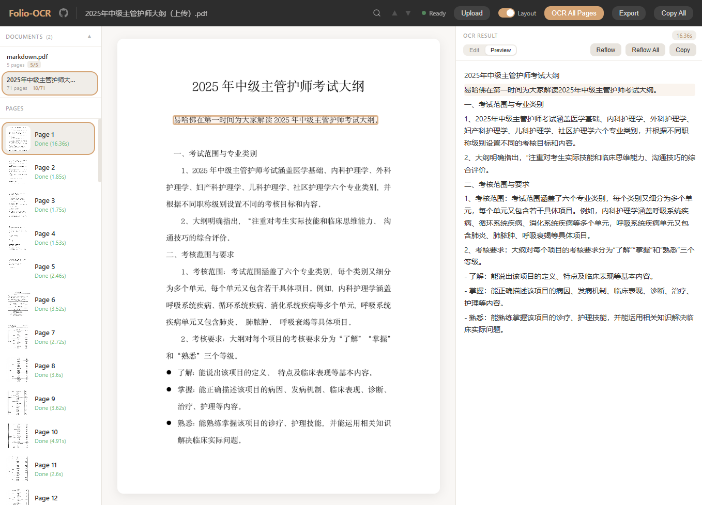

本地批量 OCR 工作台，把扫描 PDF、书籍照片和表格文档转成 Markdown、Word、EPUB
ollama pull glm-ocr
uvx --from git+https://github.com/vorojar/Folio-OCR folio-ocr
上传 PDF 或图片，按页面校对，最后导出 Markdown、Word 或 EPUB
# 第三章 文档数字化 Folio-OCR 会先检测标题、正文、表格等区域， 再把页面识别为可编辑 Markdown。 | 项目 | 输出 | 用途 | | --- | --- | --- | | 表格 | Markdown / HTML | Word、EPUB | | 正文 | 段落文本 | 校对、复制 | | 批量页 | 多页文档 | 书籍数字化 |
从上传到导出，覆盖文档 OCR 全流程
PNG、JPG、GIF、BMP 图片和 PDF 文件混合上传，PDF 以 2x 高分辨率拆页确保识别质量
自动检测标题、正文、表格、图片等区域，智能合并相邻文本区域减少 OCR 调用（2.5x 加速）
一键 OCR 全部页面，实时进度条 + ETA 估算，随时可停，选页时自动预识别下一页
Edit / Preview 双模式切换，Preview 原生渲染 HTML 表格和 Markdown，段落智能重排
支持 .md、.txt、.docx、.epub 四种格式，DOCX 基于 python-docx 生成真实 Word 文档，EPUB 适合电子书阅读
SQLite 数据库自动保存，编辑内容 800ms 防抖存盘，重启服务不丢数据，自动恢复上次文档
uvx 适合快速体验，Docker Compose 适合完整容器部署
# 方式一：不 clone，直接运行 ollama pull glm-ocr uvx --from git+https://github.com/vorojar/Folio-OCR folio-ocr # 方式二：Docker Compose git clone https://github.com/vorojar/Folio-OCR.git cd Folio-OCR docker compose up -d # 下载 OCR 模型（约 2GB，仅首次） docker compose exec ollama ollama pull glm-ocr # 打开浏览器访问 open http://localhost:3000
详细配置、Ollama 兼容和源码开发说明见 README
轻量架构，单文件后端 + 单文件前端